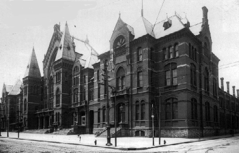

Cincinnati Music Hall

Cincinnati's historic Music Hall is haunted by the spirits of the hundreds who are buried underneath the building and whose bones are disturbed every time renovations or expansions are done on the building. The Hall was built on the site of Cincinnati's first public hospital, the Commercial Hospital and Lunatic Hospital, where conditions were horrible and those inflicted with disease were sent to the Pest House to die. When they died they were piled into mass graves in the hospital's pauper's cemetery, directly over which Music Hall is built.
Night watchmen hear strange noises and are followed by shadowy figures. Mysterious people in old-fashioned period dress sometimes make appearances at shows.
Back